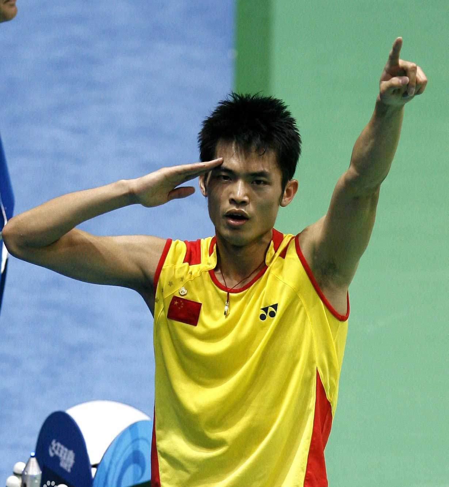
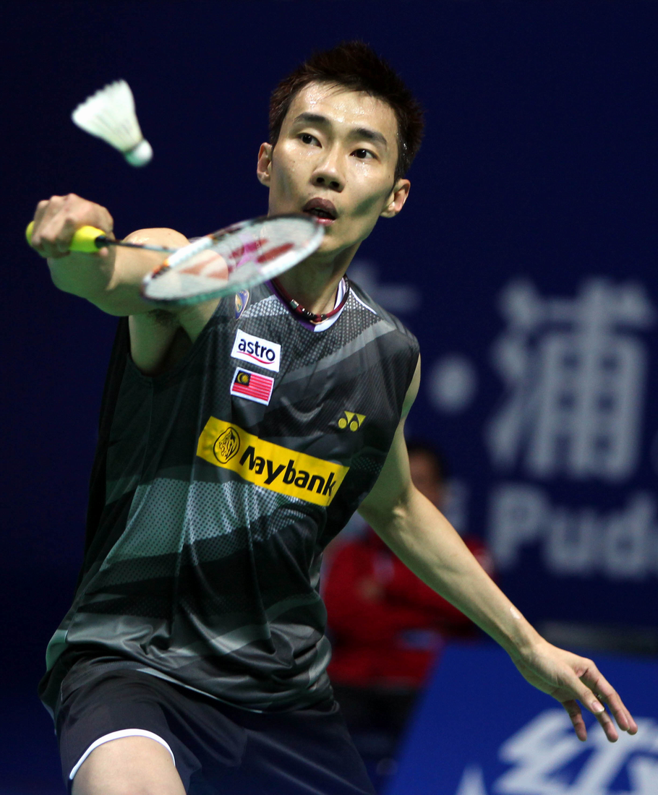
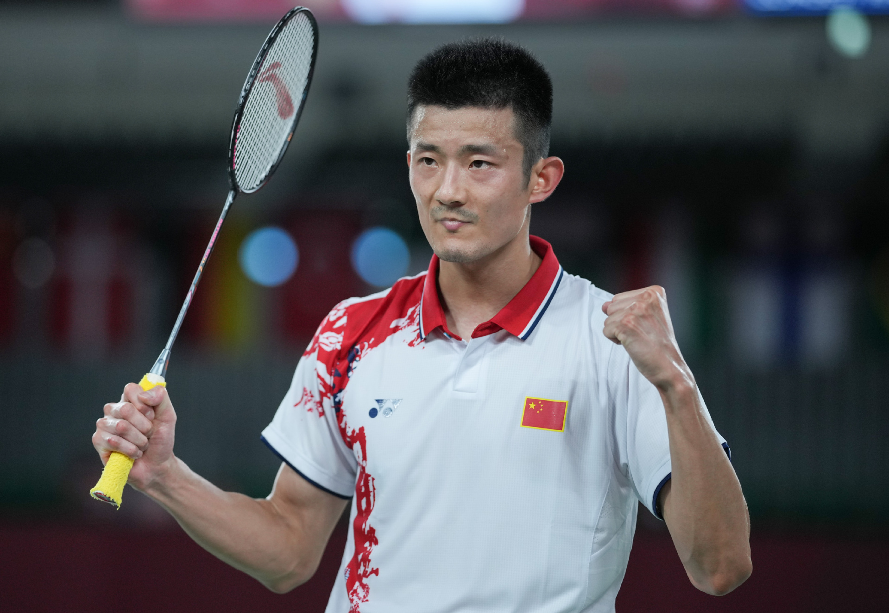
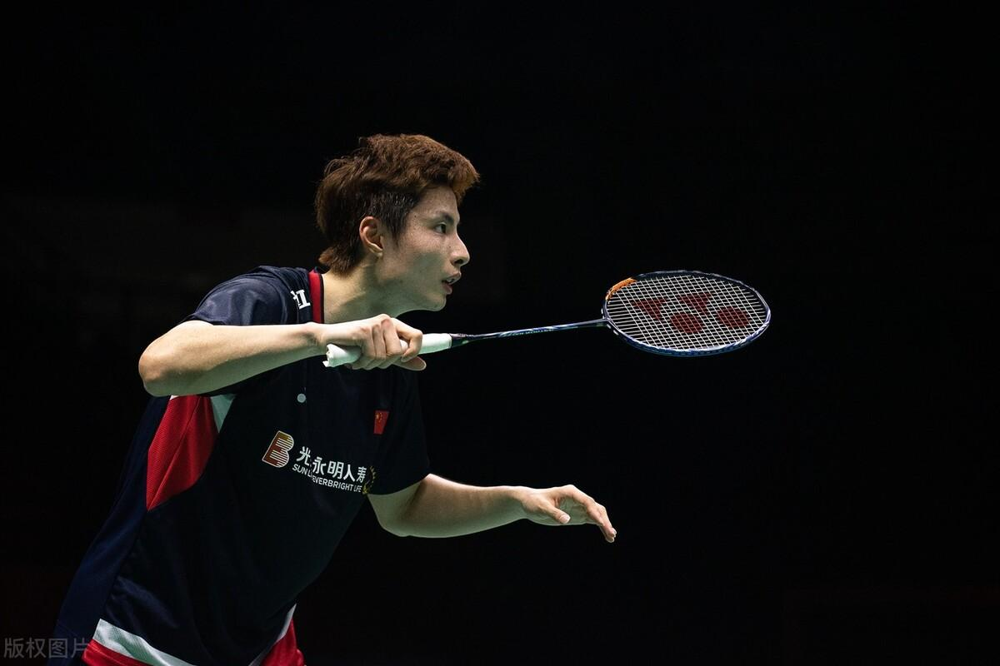

林丹是中国羽毛球历史上最具影响力的运动员之一，以其全面的技术和竞技精神闻名。他以其出色的速度、力量和战术灵活性，在羽毛球界树立了标杆。林丹以其独特的打法和对比赛的深刻理解，赢得了全球球迷的尊敬。他的职业生涯见证了他对羽毛球运动的热爱和对卓越的不懈追求，成为了激励年轻运动员的榜样。

李宗伟以其坚韧不拔的精神和谦逊的态度在羽毛球界留下了深刻的印记。他的职业生涯虽然缺少了世界冠军的奖杯，但他对羽毛球的热爱和对卓越的追求从未停歇。李宗伟展现了一种超越胜负的体育精神，即使面对失败，他也能坦然接受并以更加坚定的姿态重新出发。他的坚持和勇气，以及在逆境中不断挑战自我、永不言败的态度，成为了他独特的标签，激励着无数人。

谌龙是林李后时代另一位强者。他在球场上的风格极具特色，在防守方面更是被誉为“万里长城”。不仅如此，他还积极普及羽毛球相关知识技巧。“三十年经验，三十秒拿去”是他视频的“防伪标志”。

石宇奇是中国羽毛球运动员，以其快速的步伐和强力的击球著称。在这个时代，石宇奇可以称得上是球商最高的选手，他的球路多变，而且擅长随机应变。虽然脚踝的伤病让他接连失利，虽然他自己也自嘲为最水世界第一，但他依旧在追赶着，努力扛起国羽男单的大旗。